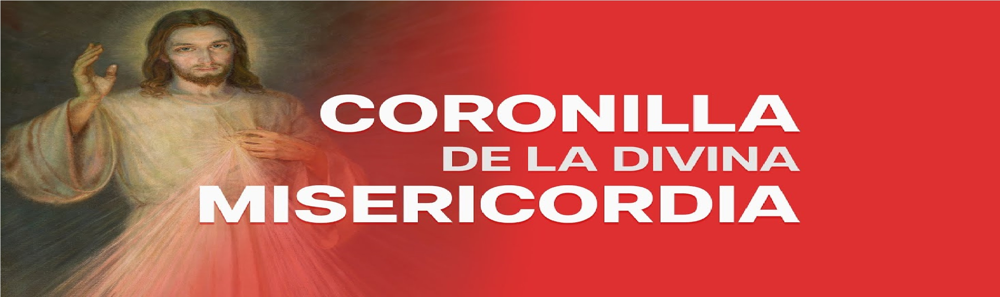

Oraciones Cristomarianas
Una colección de oraciones para fortalecer tu espíritu y tu conexión con Dios.
Los 7 Dolores de María Santísima
Meditación profunda sobre el sufrimiento de María, unida a Cristo: profecía, huida, pérdida, encuentro, cruz, muerte, sepultura.
24 de Octubre, 2025

Coronilla de la Divina Misericordia
Oración contemplativa que implora misericordia de Dios, ofrecida con rosario, fe, intercesión por el mundo y confianza en Jesús.
24 de Octubre, 2025